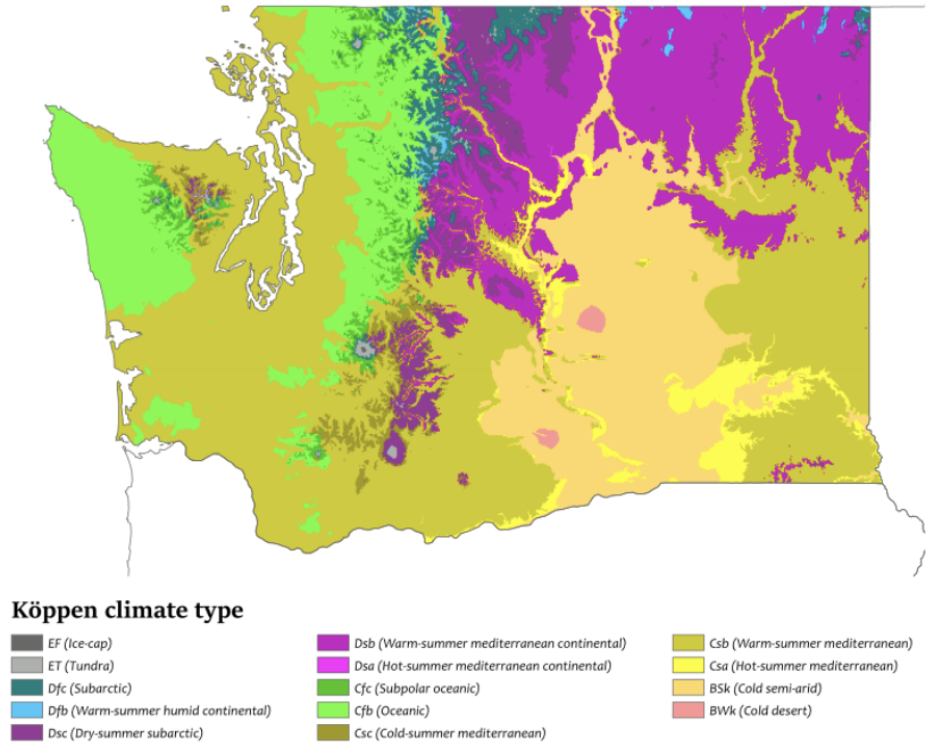
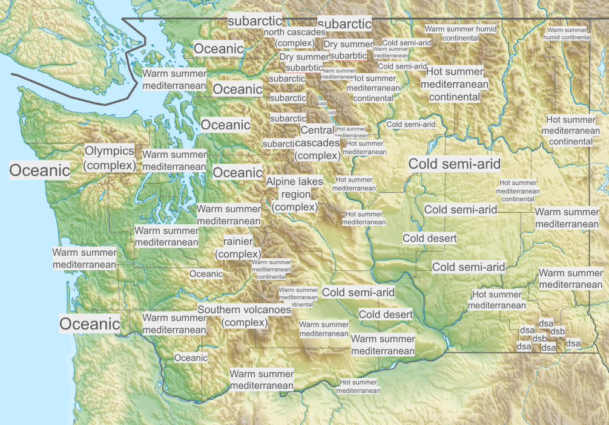

Climatology
Climate Zones of Washington
The biome refers only to the plants and animals of the region, essentially the actual biology of this. However climate takes into account the general climate in terms of temperature and precipitation, primarily. Washington contains around 14-15 of the 30 total climate zones (note: climate regions, like biomes, can be broken down even further. If done, the number of climates in WA would be higher as well as the total number)
These two maps display these zones and where they are located.

